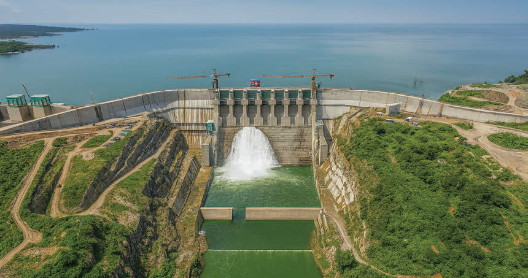
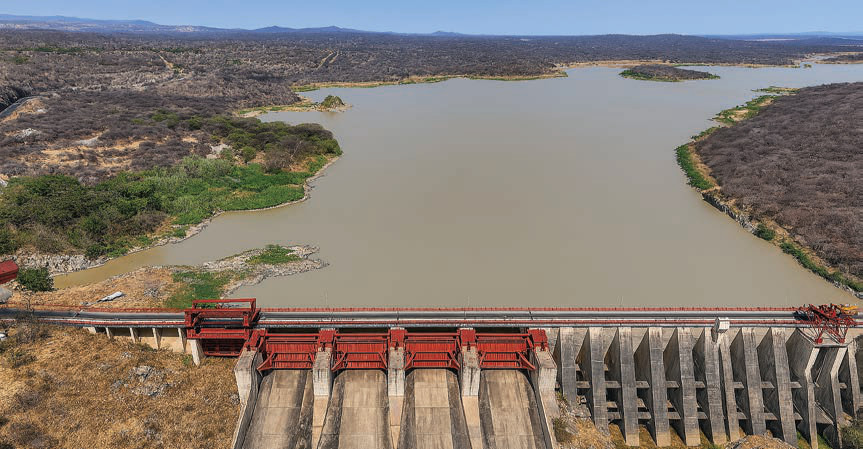

Figure 4: Julius Nyerere Hydroelectric Power Project
Source: https://www.tanesco.co.tz
Mtera dam
This dam is located in Chamwino and Mpwapwa districts in Dodoma region and Iringa district in Iringa region. The source of the Mtera dam is the Great Ruaha River. Mtera dam covers an area of 660 square kilometres and is one of the dams used for electricity generation through the Mtera Hydropower Project. In addition, the dam supports fishing activities and irrigation agriculture in nearby areas. Figure 5 indicates a part of Mtera dam.

Figure 5: The Mtera dam